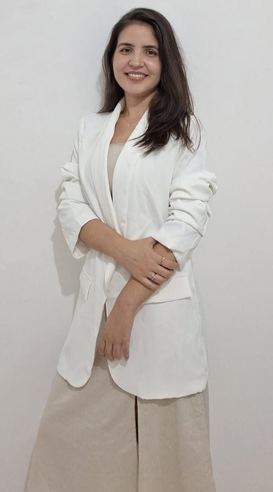
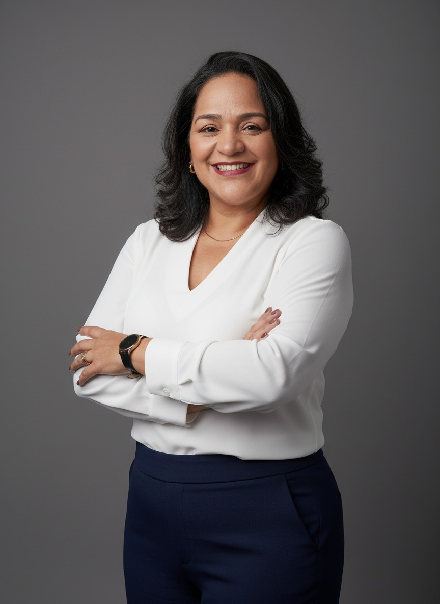

Ciência & evidência
Informação confiável, baseada em evidências, sobre endometriose, infertilidade e reprodução humana.
Rede de apoio & educação em saúde da mulher
Para quem enfrenta endometriose, infertilidade e a reprodução humana. Unimos ciência, psicologia, saúde mental e autocuidado numa comunidade segura.
Porque nenhuma mulher deveria enfrentar essa jornada sozinha.
EndoAfetos é uma rede de educação em saúde, acolhimento e transformação, criada para apoiar mulheres que convivem com a endometriose, a infertilidade e outros desafios relacionados à saúde da mulher.
Nasceu do encontro entre a experiência clínica, o conhecimento científico e a vivência real de profissionais que acreditam que o cuidado vai além do tratamento médico. Acreditamos que informação baseada em evidências, apoio emocional e uma rede de acolhimento são fundamentais para promover mais autonomia, qualidade de vida e bem-estar.
Nosso propósito é democratizar o acesso ao conhecimento especializado em saúde da mulher, fortalecendo mulheres por meio da educação em saúde, da troca de experiências e da construção de uma comunidade segura, ética e humanizada.
Por meio de encontros on-line e presenciais, materiais educativos, conteúdos digitais e da integração com profissionais de diferentes áreas, oferecemos um cuidado contínuo e multidisciplinar, conectando mulheres, especialistas e informação de qualidade.
Informação confiável, baseada em evidências, sobre endometriose, infertilidade e reprodução humana.
Escuta qualificada, acolhimento e suporte emocional que caminham junto com o tratamento.
Encontros on-line e presenciais que conectam mulheres, especialistas e informação de qualidade.
Uma história real de impacto — rodas de conversa, oficinas, eventos científicos e reconhecimento.
Seis encontros mensais que deram início ao projeto — as rodas onde tudo começou (veja a galeria em “Encontros”).
Ações contínuas: conteúdos de conscientização no Instagram e grupo de WhatsApp para apoio e troca entre as participantes.
Divulgar conhecimento, favorecer a aquisição de repertório de enfrentamento para pessoas portadoras de endometriose e contribuir na formação de profissionais através de palestras e encontros de capacitação sobre endometriose e saúde mental.
Sermos conhecidas como referência em saúde mental e endometriose, sempre respeitando nossos valores, contribuindo para a divulgação de informações através de ações de educação em saúde.
Os sintomas da endometriose vão muito além das dores físicas. Eles impactam profundamente a saúde mental, emocional e social das mulheres que convivem com essa condição. Por isso, o cuidado emocional é essencial e precisa caminhar junto com o tratamento.
Psicóloga e Psicanalista Clínica · CRP 03/13980
Especialista em reprodução humana assistida e também portadora de endometriose, trazendo uma vivência sensível e legítima dessa realidade. Idealizadora do EndoAfetos.

Psicóloga Clínica e Hospitalar · CRP 03/18483
Ampla experiência em saúde mental feminina e psicologia hospitalar, atuando com escuta qualificada, acolhimento e suporte emocional. Idealizadora do EndoAfetos.

Assistente Social · Mestre em Educação Social
Sólida trajetória no trabalho psicossocial com mulheres, especialmente em contextos de vulnerabilidade e saúde, contribuindo para uma visão ampliada e humanizada do cuidado.
Juntas, promovemos acolhimento, escuta qualificada e estratégias funcionais de enfrentamento, ampliando o repertório emocional e fortalecendo a autonomia das mulheres. Nosso compromisso é contribuir para a melhoria da qualidade de vida, oferecendo suporte integral que respeita a singularidade de cada trajetória.
Carregando vídeo…
Foi uma experiência especial! Acolhimento, escuta, partilha, cura, transformação… Estou muito feliz em fazer parte deste grupo. Gratidão pela escuta, acolhimento!
Conseguir quebrar barreiras e falar um pouco publicamente e sentir o acolhimento de todas, foi incrível!
Para mim, particularmente, foi uma experiência muito boa: saber que posso ser acolhida e acolher nesta nova família. Reconhecer nossos limites é tudo!
Liliane e Fernanda, idealizadoras do projeto, também atendem em consultório. Se você busca um cuidado individual e contínuo, agende uma sessão de psicoterapia.
Psicóloga e Psicanalista Clínica · CRP 03/13980
Agendar com LilianePsicóloga Clínica e Hospitalar · CRP 03/18483
Agendar com FernandaO atendimento psicológico individual é um serviço clínico particular, distinto das rodas de conversa gratuitas do projeto.
Psicóloga e Psicanalista Clínica
WhatsApp: (71) 98860-0355Psicóloga Clínica e Hospitalar
WhatsApp: (71) 98325-8192Psicóloga e Psicanalista Clínica · CRP 03/13980
Psicóloga · CRP 03/18483
Assistente Social
Perfil profissional
Mestrado em Educação Social e Intervenção Comunitária e sólida experiência em treinamento e suporte
emocional. Trajetória que inclui a organização e facilitação de grupos de empoderamento para diversos
públicos — pacientes com endometriose, pacientes pós-bariátricos e em tratamento de hemodiálise, além de
jovens em situação de vulnerabilidade social e pessoas idosas em situação de exclusão social.
Formação acadêmica